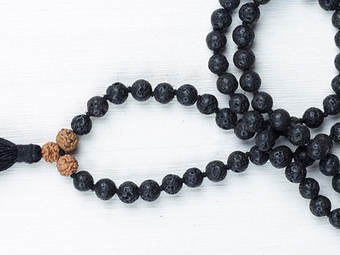

Lava is believed to promote strength when facing difficult situations. It's believed the stone was worn by Native Americans when entering battle for its qualities of strength and clarity.
Here is Lava content pulled form the latest Etsy listing:
{{etsyDescription}}